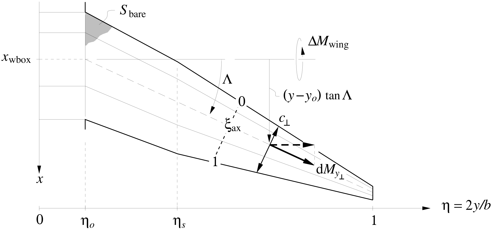

📖 Theory - Surface pitching moment
The surface's reference axis is at some specified chordwise fractional location $\xi_{\rm ax}$, as shown in the first figure. The profile pitching moment acts along the span-axis coordinate $y_{\scriptscriptstyle \perp}$, and scales with the normal-plane chord $c_{\scriptscriptstyle \perp}$. These are shown in the first figure, and related to the spanwise and streamwise quantities via the sweep angle.
\[\begin{aligned} y_{\scriptscriptstyle \perp}& = & y / \cos \Lambda %\label{yperp} \\ c_{\scriptscriptstyle \perp}& = & c \: \cos \Lambda %\label{cperp} \\ V_{\scriptscriptstyle \perp}& = & V_{\!{\scriptscriptstyle \infty}}\: \cos \Lambda %\label{Vperp} \end{aligned}\]
The airfoil's pitching moment contribution shown in the figure below is
\[\begin{aligned} dM_{y_{\scriptscriptstyle \perp}} & = \frac{1}{2} \rho V_{\scriptscriptstyle \perp}^2 \: c_{\scriptscriptstyle \perp}^2 \: c_m \:\: {\rm d}y_{\scriptscriptstyle \perp} \\ \\ c_m {\scriptstyle (\eta)}& = \left\{ \begin{array}{lcl} \; c_{m_o} & , & 0 < \eta < \eta_o \\[0.5em] \displaystyle \; c_{m_o} + (c_{m_s} \!-\! c_{m_o}\,) \frac{\eta \!-\! \eta_o}{\eta_s\!-\!\eta_o} & , & \eta_o < \eta < \eta_s \\[0.25em] \displaystyle \; c_{m_s} + (c_{m_t} \!-\! c_{m_s}\,) \frac{\eta \!-\! \eta_s}{1\!-\!\eta_s} & , & \eta_s < \eta < 1 \end{array} \right. %\label{cmeta} \end{aligned}\]
and including the contribution of the lift load $\tilde{p}$ with its moment arm gives the following overall wing pitching moment $\Delta M_{\rm wing}$ increment about the axis center location. $\begin{aligned} {\rm d}\Delta M_{\rm wing}& \!=\! & \tilde{p} \left[ c_{\scriptscriptstyle \perp}\! \left(\xi_{\rm ax}\!-\!{\textstyle \frac{1}{4}}\right) \! \cos\Lambda \,-\, (y\!-\!y_o) \tan\Lambda \right] {\rm d}y \:+\: {\rm d}M_{y_{\scriptscriptstyle \perp}} \, \cos\Lambda \hspace{3em} \end{aligned}$
Integrating this along the whole span then gives the total surface pitching moment about its root axis.
\[\begin{aligned} \Delta M_{\rm wing}& \!=\! (p_o \, b_o + 2\Delta L_o) \, c_o \! \left( \xi_{\rm ax} \!-\! {\textstyle \frac{1}{4}}\right) \nonumber \\ & \!+ \;\! \cos^2 \! \Lambda \; b \int_{\eta_o}^1 p{\scriptstyle (\eta)}\: c{\scriptstyle (\eta)}\left( \xi_{\rm ax} \!-\! {\textstyle \frac{1}{4}}\right) \: {\rm d}\eta \nonumber \\ & \!-\!\; \frac{b}{2} \, \tan\!\Lambda \: b \int_{\eta_o}^1 p{\scriptstyle (\eta)}(\eta\!-\!\eta_o) \; {\rm d}\eta \nonumber \\ & \!+\!\; 2 \Delta L_t \left[ c_o \lambda_t \left( \xi_{\rm ax} \!-\! {\textstyle \frac{1}{4}}\right) \cos^2\!\Lambda \;-\; \frac{b}{2} (1\!-\!\eta_o) \, \tan\!\Lambda \right] \nonumber \\ & \!+\!\; \frac{1}{2} \rho V_{\!{\scriptscriptstyle \infty}}^2 \, \cos^4 \! \Lambda \; b \! \int_{\eta_o}^1 \!\! c_m {\scriptstyle (\eta)}\: {c{\scriptstyle (\eta)}}^2 \:\: {\rm d}\eta \\ %% \Delta M_{\rm wing}& \!=\; p_o \, b \, c_o \: \eta_o \, (1 \!+\! f_{L_{\scriptstyle o}}) \! \left( \xi_{\rm ax} \!-\! {\textstyle \frac{1}{4}}\right) \nonumber \\ & \!+\!\; p_o \, b \, c_o \left( \xi_{\rm ax} \!-\! {\textstyle \frac{1}{4}}\right) \cos^2 \! \Lambda \; \frac{1}{3} \left[ \, \left( 1 + {\textstyle \frac{1}{2}}\left(\lambda_s \!+\!\gamma_s\right) + \lambda_s \gamma_s \right)(\eta_s \!-\! \eta_o) \right. \nonumber \\ & \hspace{9em} \left. \,+\, \left( \lambda_s \gamma_s + {\textstyle \frac{1}{2}}\left(\lambda_s \gamma_t\!+\!\gamma_s\lambda_t\right) + \lambda_t \gamma_t \right)(1 \!-\! \eta_s) \, \right] \nonumber \\ & \!-\!\; p_o \, b \, c_o \: \frac{\tan\Lambda}{K_o} \, \frac{1}{12} \left[ \, \left( 1 \!+\! 2\gamma_s \right) (\eta_s \!-\! \eta_o)^2 \,+\, \left( \gamma_s \!+\! 2\gamma_t\right) (1 \!-\! \eta_s)^2 \,+\, 3\left( \gamma_s \!+\! \gamma_t \right) (\eta_s \!-\! \eta_o)(1 \!-\! \eta_s) \, \right] \nonumber \\ & \!+\!\; 2 \, p_o \, b \, c_o \, f_{L_{\scriptstyle t}}\, \lambda_t \, \gamma_t \left[ K_o \lambda_t \left( \xi_{\rm ax} \!-\! {\textstyle \frac{1}{4}}\right) \cos^2\!\Lambda \;-\; {\textstyle \frac{1}{2}}(1\!-\!\eta_o) \, \tan\!\Lambda \right] \nonumber \\ & \!+\!\; \frac{1}{2} \rho V_{\!{\scriptscriptstyle \infty}}^2 \, S \, c_o \, \frac{\cos^4\!\Lambda}{K_c} \frac{1}{12} \left[ \left( c_{m_o} (3 \!+\! 2 \lambda_s \!+\! \lambda_s^2) + c_{m_s} (3 \lambda_s^2 \!+\! 2 \lambda_s \!+\! 1 ) \right)(\eta_s\!-\!\eta_o) \right. \nonumber \\ & \left. + \left( c_{m_s} (3 \lambda_s^2 \!+\! 2 \lambda_s \lambda_t \!+\! \lambda_t^2) + c_{m_t} (3 \lambda_t^2 \!+\! 2 \lambda_s \lambda_t \!+\! \lambda_s^2) \right)(1\!-\!\eta_s) \right] \hspace{3em} %\label{DMwing} \end{aligned}\]
By using the relation
\[\begin{aligned} p_o \, b & = & \frac{1}{2} \rho V_{\!{\scriptscriptstyle \infty}}^2 \, S \: \frac{1}{K_p} \left( C_{\!L} \!-\! \frac{S_{\rm h}}{S} C_{\!L_{\rm h}} \right) \end{aligned}\]
and the equation above it gives the equivalent pitching moment coefficient constant and $C_{\!L}$ derivative.
\[\begin{aligned} \Delta C_{\!M_{\rm wing}} \;\equiv\; \frac{\Delta M_{\rm wing}}{{\textstyle \frac{1}{2}}\rho V_{\!{\scriptscriptstyle \infty}}^2 S c_o} & \!=\; \Delta C_{m_0} \,+\, \frac{{\rm d}C_m}{{\rm d}C_{\!L}} \left( C_{\!L} \!-\! \frac{S_{\rm h}}{S} C_{\!L_{\rm h}} \right) \\ \frac{{\rm d}C_m}{{\rm d}C_{\!L}} & \!=\! \frac{1}{K_p} \left\{ \rule[-1.25ex]{0ex}{4.5ex} \eta_o \, (1 \!+\! f_{L_{\scriptstyle o}}) \! \left( \xi_{\rm ax} \!-\! {\textstyle \frac{1}{4}}\right) \right. \nonumber \\ & + \, \left( \xi_{\rm ax} \!-\! {\textstyle \frac{1}{4}}\right) \cos^2 \! \Lambda \; \frac{1}{3} \left[ \, \left( 1 + {\textstyle \frac{1}{2}}\left(\lambda_s \!+\!\gamma_s\right) + \lambda_s \gamma_s \right)(\eta_s \!-\! \eta_o) \right. \nonumber \\ & \left. \,+\, \left( \lambda_s \gamma_s + {\textstyle \frac{1}{2}}\left(\lambda_s \gamma_t\!+\!\gamma_s\lambda_t\right) + \lambda_t \gamma_t \right)(1 \!-\! \eta_s) \, \right] \nonumber \\ & - \; \frac{\tan\!\Lambda}{K_o} \, \frac{1}{12} \left[ \, \left( 1 \!+\! 2\gamma_s \right) (\eta_s \!-\! \eta_o)^2 \,+\, \left( \gamma_s \!+\! 2\gamma_t\right) (1 \!-\! \eta_s)^2 \right. \nonumber \\ & \left. \,+\, 3\left( \gamma_s \!+\! \gamma_t \right) (\eta_s \!-\! \eta_o)(1 \!-\! \eta_s) \rule[-0.5ex]{0ex}{3ex} \, \right] \nonumber \\ & \left. + \; 2 \, f_{L_{\scriptstyle t}}\, \lambda_t \, \gamma_t \left[ K_o \lambda_t \left( \xi_{\rm ax} \!-\! {\textstyle \frac{1}{4}}\right) \cos^2\!\Lambda \;-\; {\textstyle \frac{1}{2}}(1\!-\!\eta_o) \, \tan\Lambda \right] \rule[-1.25ex]{0ex}{4.5ex} \right\} \\ % \Delta C_{m_0} & \!=\! \frac{\cos^4 \!\Lambda}{K_c} \, \frac{1}{12} \left[ \left( c_{m_o} (3 \!+\! 2 \lambda_s \!+\! \lambda_s^2) + c_{m_s} (3 \lambda_s^2 \!+\! 2 \lambda_s \!+\! 1 ) \right)(\eta_s\!-\!\eta_o) \right. \nonumber \\ & \hspace{1em} \left. + \left( c_{m_s} (3 \lambda_s^2 \!+\! 2 \lambda_s \lambda_t \!+\! \lambda_t^2) + c_{m_t} (3 \lambda_t^2 \!+\! 2 \lambda_s \lambda_t \!+\! \lambda_s^2) \right)(1\!-\!\eta_s) \right] \hspace{3em} %\label{CM0wing} \hspace{2em} \end{aligned}\]
